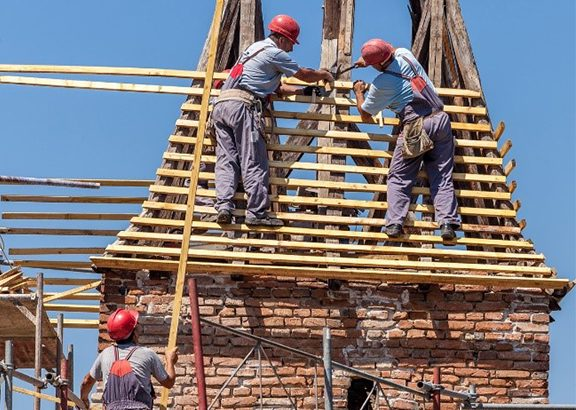
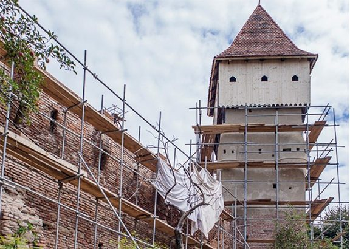
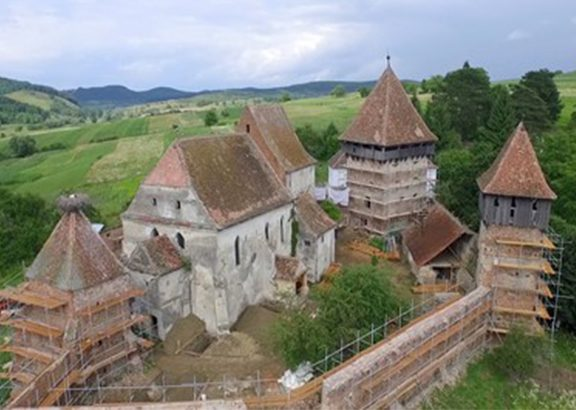
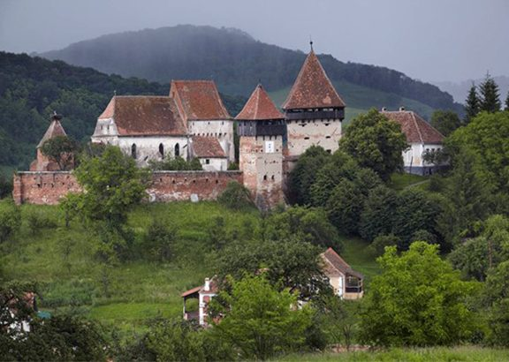

Alma Vii Citadel
The medieval fortified church in the village of Alma Vii was reopened on 30th September 2017 after 18 months of restoration focusing on the fortifications which had been under risk of collapse.


Electricity was installed, floors laid and doors and windows fitted in the towers, one of which is now a guesthouse, the remaining three are small museums and a shop.


The project was designed, implemented and funded by MET and its partner NIKU (the Norwegian Institute for Cultural Heritage Research). We also thank Richard Oldfield for his wonderful donation.